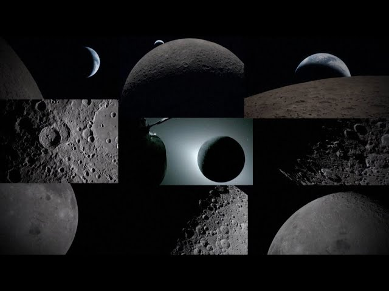
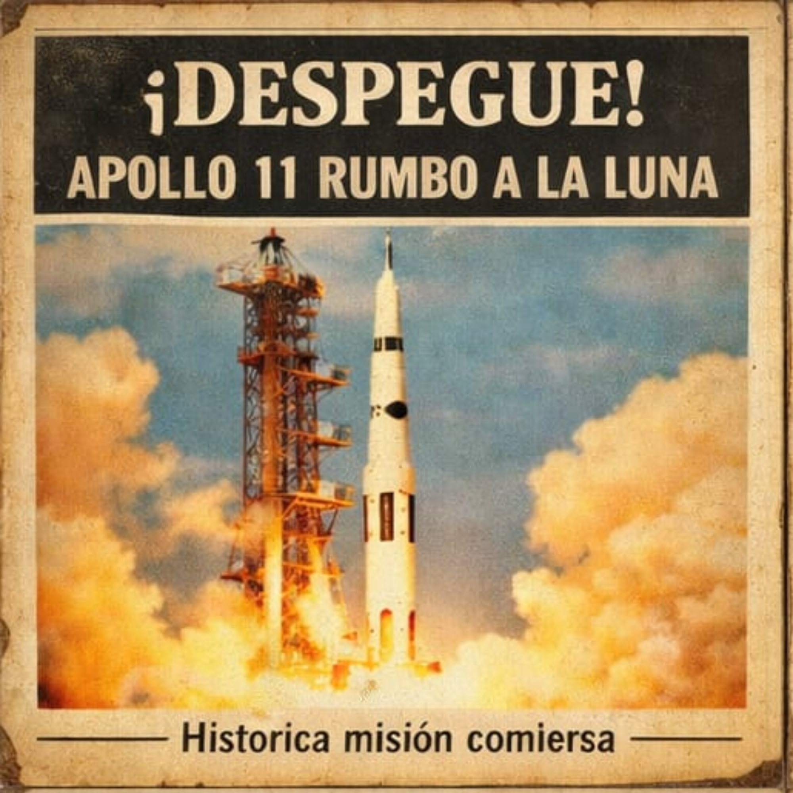
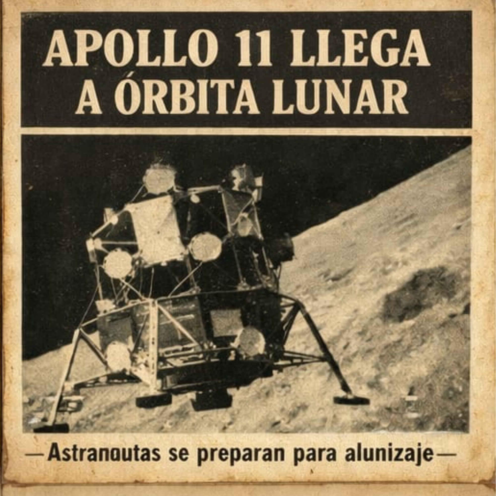
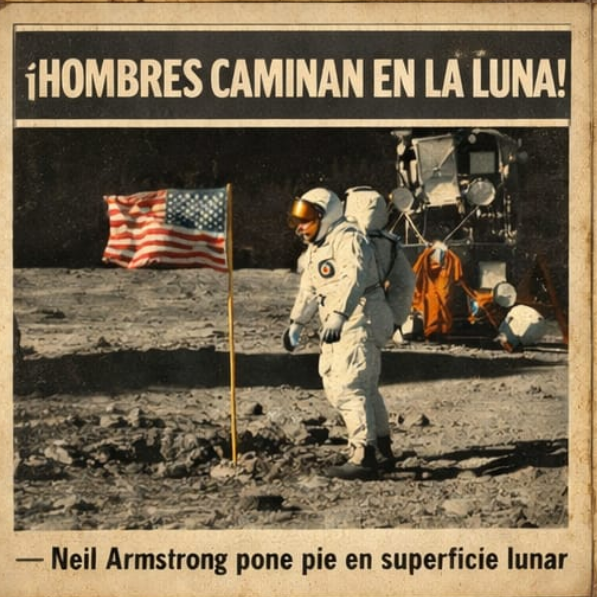
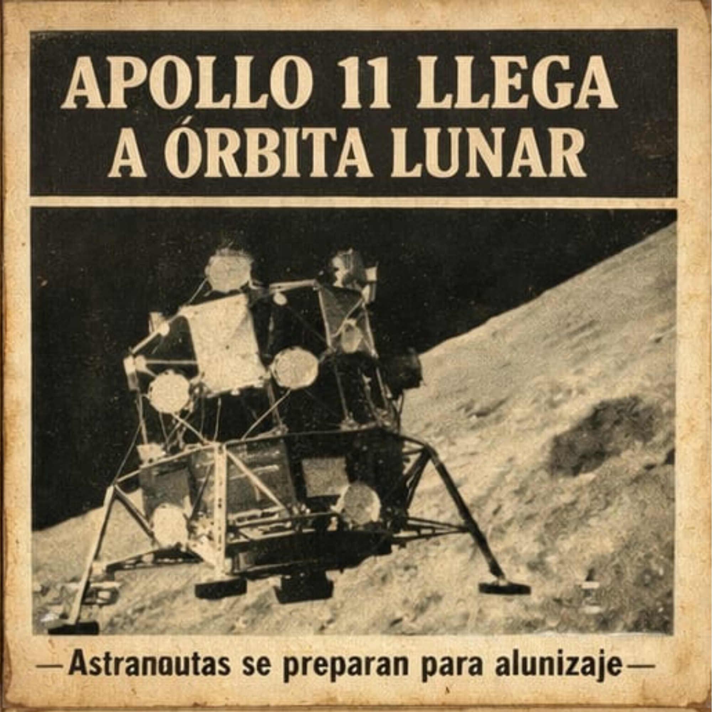

La misión no aterriza en la Luna, pero:
- Rodearán la Luna
- Se alejarán más de la Tierra que cualquier humano antes
- Probarán maniobras y comunicaciones en el espacio profundo
✨ Dato importante:
Es la primera misión lunar con una tripulación diversa (incluye la primera mujer y la primera persona afrodescendiente en una misión lunar).🧑🚀Sus OBJETIVOS son:
- Probar la nave Orion con humanos
- Verificar sistemas de soporte vital
- Realizar un viaje alrededor de la Luna
- Preparar el camino para Artemis III (alunizaje)
✨ TECNOLOGÍA CLAVE
Cohete SLS (Space Launch System): el más potente de la NASA Nave Orion: cápsula donde viajarán los astronautas📅 FECHA DE LANZAMIENTO
Previsto para 2025 (puede cambiar dependiendo de pruebas y seguridad).🌍 ¿POR QUÉ ES IMPORTANTE?
Marca el regreso humano a la exploración lunar Es el paso previo para vivir en la Luna Abre la puerta a futuras misiones a Marte“No solo volvemos a la Luna… estamos preparando el camino hacia Marte.”



